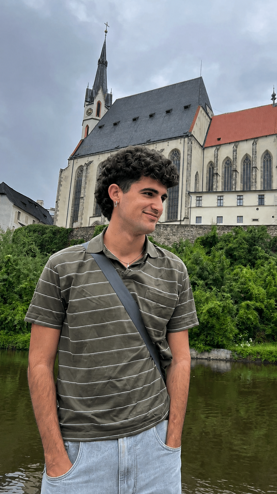

About.
I am a mathematician and statistician from Seville, currently completing an MSc in Mathematics at the University of Bonn. My interests lie in probability, interacting particle systems, and hydrodynamic limits. I am particularly interested in how deterministic macroscopic behaviour emerges from systems built from many random local interactions.
Before Bonn, I completed a double BSc in Mathematics and Statistics at the University of Seville and spent an exchange year at the University of Warwick. Alongside theoretical probability, I enjoy other flavors of applied mathematics, like statistical learning, operations research and numerical analysis.
